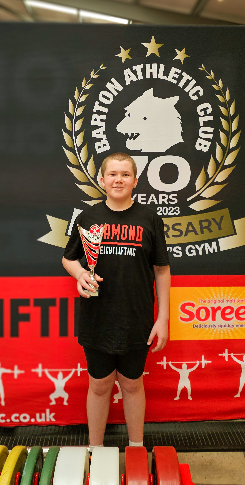
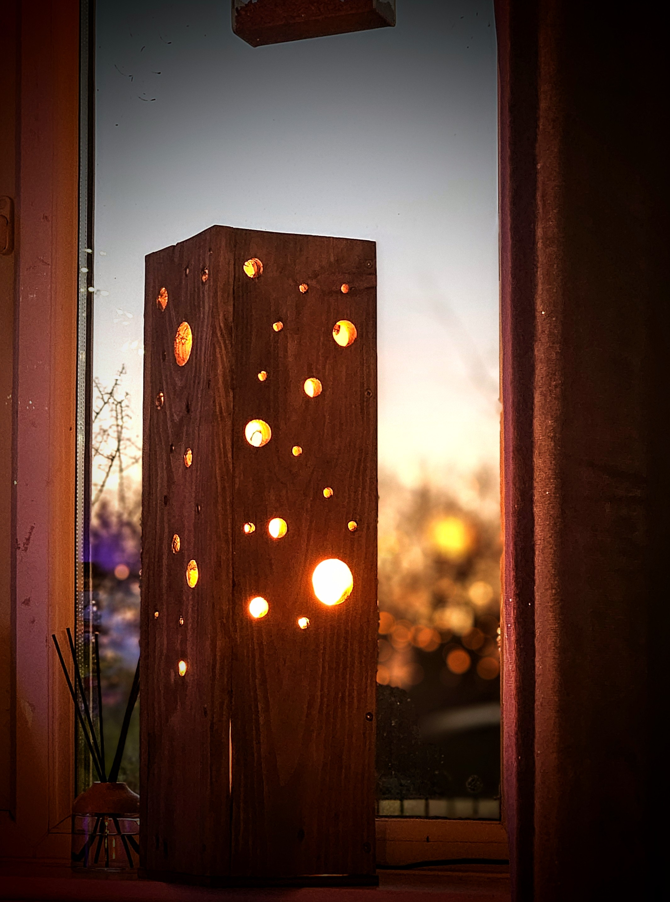
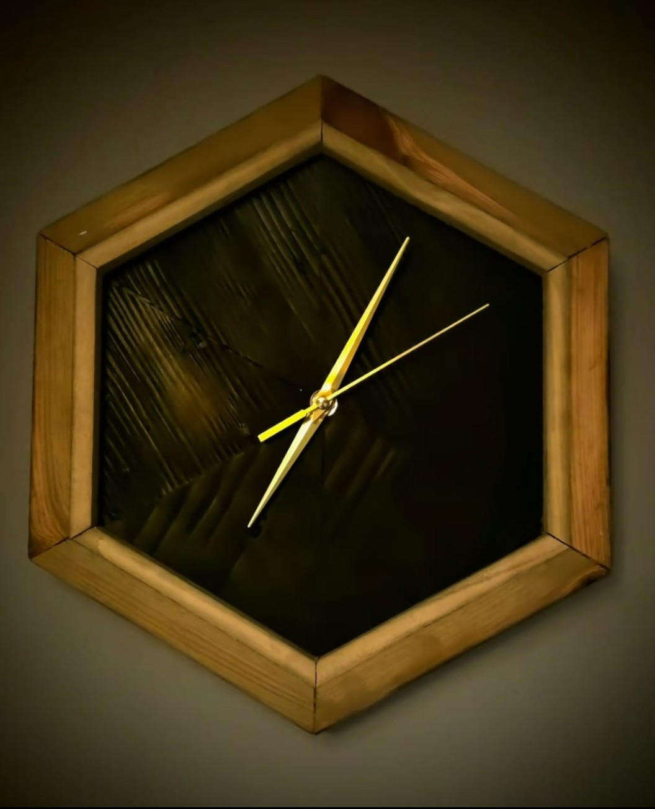
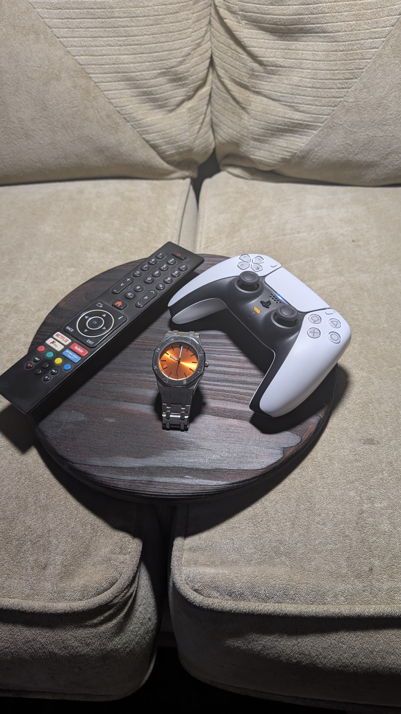

North Wales • Reclaimed Timber • Handcrafted
Handcrafted Furniture
Built To Last
Handcrafted furniture and home décor from North Wales, created from reclaimed and locally sourced timber with a focus on craftsmanship, quality and character.

Meet The Maker
Hi, I'm Mason Hughes, founder of Hughes Woodworks.
I design and build handcrafted furniture and home décor from reclaimed and locally sourced timber in North Wales.
Alongside growing Hughes Woodworks, I balance home education, rugby, powerlifting and Air Cadets while working toward my future ambitions.
Every piece is built with care, craftsmanship and a commitment to quality.
Why People Support Mason
Mason is building more than a woodworking business. He is developing skills, discipline and experience through craftsmanship, sport, education and service while creating opportunities for his future through Hughes Woodworks.
Young Entrepreneur
Building Hughes Woodworks while completing home education and GCSE studies.
Craftsmanship
Creating handcrafted furniture and home décor from reclaimed and locally sourced timber.
Discipline
Developed through rugby, powerlifting and participation in the Air Cadets.
Future Ambition
Building skills, experience and opportunities that support future ambitions and business growth.
What Hughes Woodworks Stands For
Craftsmanship
Quality in every detail.
Integrity
Honest work. Honest values.
Perseverance
Keep learning. Keep building.
Discipline
In the workshop and in life.
Signature Projects
A selection of handcrafted pieces designed and built by Mason Hughes using reclaimed and locally sourced timber.

Herringbone Coffee Table
One of Hughes Woodworks' most recognisable pieces, combining traditional craftsmanship with a bold herringbone pattern.
A handcrafted statement piece featuring a distinctive herringbone design and built to last.

Illuminated Lamp
A handcrafted statement lamp designed to create warmth and atmosphere while showcasing the beauty of natural timber.
A handcrafted wooden lamp designed to combine function, atmosphere and craftsmanship.

Hexagon Clock
Modern geometric design paired with handcrafted woodworking to create a distinctive home décor piece.
One of Hughes Woodworks' most recognisable creations, combining modern design and craftsmanship.

Sofa Tray & Valet Tray
Functional handcrafted accessories designed to make everyday living more organised and enjoyable.
Practical handcrafted accessories designed to organise everyday essentials beautifully.
Follow Mason's Journey
Follow Hughes Woodworks and Mason's journey across social media for new projects, behind-the-scenes content and future updates.
Ready To Work Together?
Whether you're looking for a custom handcrafted piece, interested in supporting Hughes Woodworks, or simply want to follow Mason's journey, we'd love to hear from you.
Get In TouchCommission a Custom Piece
Looking for something unique? Hughes Woodworks can create handcrafted furniture, home décor and custom wooden pieces tailored to your requirements. Whether it's a gift, a statement piece, a piece of home décor or a practical item for everyday use, Mason would love to discuss your ideas.
Contact Mason